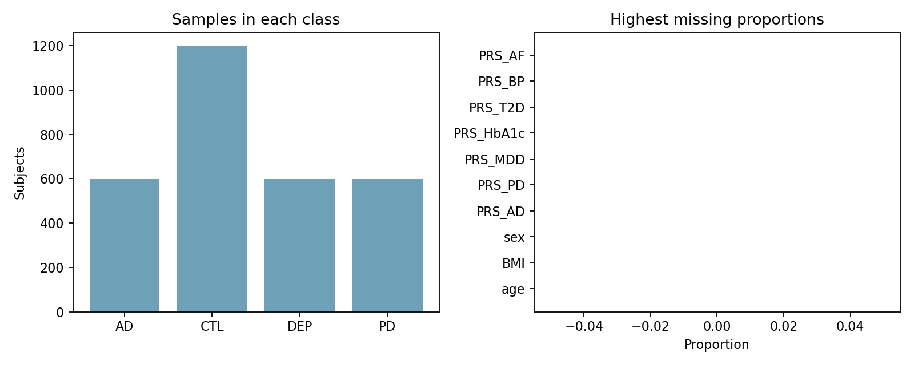
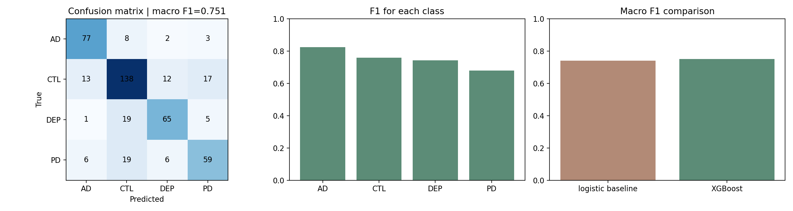
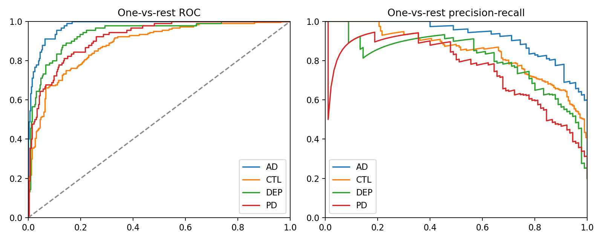
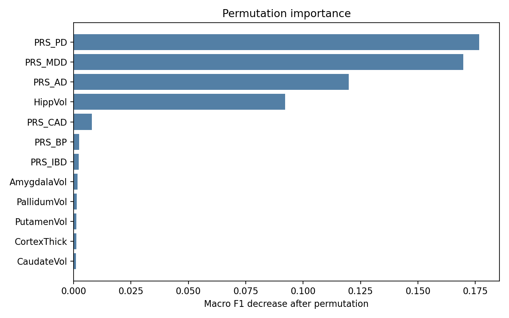

KYDW 本科生科研入门体验项目
实践项目参考答案 04：脑疾病表格数据与 XGBoost 预测 参考代码与说明按实践任务排列，可结合图像、指标和输出文件核对自己的实现。
运行后把图像、指标和输出文件与自己的结果放在一起阅读。
Markdown 单元格 01
实践项目 04：XGBoost 脑疾病表格分类 本 Notebook 使用课程模拟的 Data.csv，每行表示一个模拟受试者记录，label 包含健康对照（CTL）、阿尔茨海默病（AD）、帕金森病（PD）和抑郁症（DEP）四类模拟标签。各列由课程设定生成，用于学习数据检查、预处理、XGBoost 训练、四分类评价和变量贡献分析。
Kaggle 是本项目的首选实践入口。打开公开 Notebook 后，点击“复制并编辑”保存到自己的账户，再按单元格顺序运行。下载 Notebook 到电脑运行是补充方式。
代码单元格保留行末注释，说明每一步的输入、处理和输出；参考实现与实践顺序对应。
任务总览 1. 核对每行的样本单位、类别数量和变量来源。 2. 处理缺失值、类别变量和标识符。 3. 实现 XGBoost 参数并完成训练。 4. 输出混淆矩阵、每类指标和预测概率。 5. 使用置换重要性分析模型依赖的变量。
需要保存的结果 task4_data_summary.png、task4_confusion.png、task4_roc_pr.png、task4_importance.png、task4_result.json。
代码单元格 02
from pathlib import Path # 用 Path 处理文件和目录路径
import json
import numpy as np # 导入数组和数值运算工具
import pandas as pd # 导入表格读取与整理工具
import matplotlib.pyplot as plt # 导入绘图工具
from sklearn.model_selection import train_test_split
from sklearn.compose import ColumnTransformer
from sklearn.pipeline import Pipeline
from sklearn.impute import SimpleImputer
from sklearn.linear_model import LogisticRegression
from sklearn.preprocessing import OneHotEncoder, LabelEncoder, StandardScaler
from sklearn.metrics import accuracy_score, f1_score, confusion_matrix, classification_report # 导入本任务使用的评价指标
from sklearn.inspection import permutation_importance
from xgboost import XGBClassifier
SEED = 42; OUT = Path('/kaggle/working'); OUT.mkdir(exist_ok=True) # 固定随机状态以便复现实验
DATA_PATH = None # 指定或定位课程数据文件
candidates = sorted(Path('/kaggle/input').rglob('Data.csv'))
if DATA_PATH is None and candidates: DATA_PATH = candidates[0]
assert DATA_PATH is not None, '请挂载包含课程 Data.csv 的数据集。' # 核对数据或计算结果是否符合预期条件
df = pd.read_csv(DATA_PATH)
assert {'ID','label'}.issubset(df.columns), '需要课程 Data.csv 中的 ID 和 label 列。' # 核对数据或计算结果是否符合预期条件
y_encoder = LabelEncoder(); y = y_encoder.fit_transform(df['label'].astype(str)) # 把文本类别转换为连续整数标签
X = df.drop(columns=['ID','label']) # 移除标识符与标签，保留模型输入特征
print(df.shape, dict(zip(y_encoder.classes_, np.bincount(y))))
Markdown 单元格 03
任务 1：确定样本单位和输入变量 每行对应一条模拟受试者记录，ID 只用于识别，不作为输入。请输出类别数量、变量类型和缺失率。
代码单元格 04
summary = {
'numeric_columns': list(X.select_dtypes(include=np.number).columns),
'categorical_columns': [column for column in X.columns if column not in X.select_dtypes(include=np.number).columns],
'class_counts': dict(zip(y_encoder.classes_, np.bincount(y))),
'missing_rate': df.isna().mean().round(4).to_dict(),
}
print(summary)
Markdown 单元格 05
任务 2：划分数据、拟合预处理并建立基线 预处理只能使用训练集拟合。验证集用于比较逻辑回归和 XGBoost，测试集在模型设置确定后只评价一次。当前 Data.csv 的缺失值总数为 0；代码仍保留训练集内的填补步骤，并在下一段用一小段复制数据观察填补行为。
代码单元格 06
X_train, X_temp, y_train, y_temp = train_test_split(X, y, test_size=.30, stratify=y, random_state=SEED) # 固定随机状态以便复现实验
X_val, X_test, y_val, y_test = train_test_split(X_temp, y_temp, test_size=.50, stratify=y_temp, random_state=SEED) # 固定随机状态以便复现实验
numeric_cols = list(X.select_dtypes(include=np.number).columns) # 列出需要数值预处理的特征
categorical_cols = [c for c in X.columns if c not in numeric_cols] # 列出需要类别编码的特征
pre = ColumnTransformer([
('num', Pipeline([('imputer', SimpleImputer(strategy='median'))]), numeric_cols),
('cat', Pipeline([('imputer', SimpleImputer(strategy='most_frequent')), ('onehot', OneHotEncoder(handle_unknown='ignore'))]), categorical_cols),
])
baseline_pre = ColumnTransformer([
('num', Pipeline([('imputer', SimpleImputer(strategy='median')), ('scaler', StandardScaler())]), numeric_cols),
('cat', Pipeline([('imputer', SimpleImputer(strategy='most_frequent')), ('onehot', OneHotEncoder(handle_unknown='ignore'))]), categorical_cols),
])
baseline = Pipeline([('pre', baseline_pre), ('clf', LogisticRegression(max_iter=3000, class_weight='balanced'))])
print(len(X_train), len(X_val), len(X_test))
# 用训练集复制数据制造一个缺失值，仅观察填补动作，不改动原始 Data.csv # 保持原始数据不变
demo_col = numeric_cols[0] # 选择第一个数值变量作为演示列
demo_values = X_train[[demo_col]].copy() # 复制训练集中的一列
demo_values.iloc[:5, 0] = np.nan # 在副本中放入几个缺失值
demo_imputer = SimpleImputer(strategy='median') # 使用训练集规则建立中位数填补器
demo_imputer.fit(X_train[[demo_col]]) # 只用训练集拟合填补规则
demo_filled = demo_imputer.transform(demo_values) # 将训练规则应用到带缺失值的副本
print('缺失演示:', demo_col, '缺失数=', int(demo_values.isna().sum().iloc[0]), '填补后缺失数=', int(np.isnan(demo_filled).sum())) # 检查填补结果
Markdown 单元格 07
任务 3：实现 XGBoost 模型 四分类模型输出四个类别的概率。
代码单元格 08
model = Pipeline([('pre', pre), ('clf', XGBClassifier(
n_estimators=180, max_depth=3, learning_rate=.05,
objective='multi:softprob', num_class=len(y_encoder.classes_),
subsample=.8, colsample_bytree=.8, eval_metric='mlogloss', random_state=SEED,
))])
print(model)
Markdown 单元格 09
任务 4：评价四分类结果 先在验证集比较基线和 XGBoost，再在设置确定后查看测试集的混淆矩阵、每类 precision/recall/F1、宏平均 F1 和预测概率。
代码单元格 10
baseline.fit(X_train, y_train)
baseline_val_pred = baseline.predict(X_val)
baseline_test_pred = baseline.predict(X_test)
baseline_val_f1 = f1_score(y_val, baseline_val_pred, average='macro')
baseline_f1 = f1_score(y_test, baseline_test_pred, average='macro')
model.fit(X_train, y_train)
val_pred = model.predict(X_val); test_prob = model.predict_proba(X_test); test_pred = test_prob.argmax(axis=1)
validation_xgboost_f1 = f1_score(y_val, val_pred, average='macro')
macro_f1 = f1_score(y_test, test_pred, average='macro')
accuracy = accuracy_score(y_test, test_pred)
cm = confusion_matrix(y_test, test_pred)
report = classification_report(y_test, test_pred, target_names=y_encoder.classes_, output_dict=True)
fig, axes = plt.subplots(1, 2, figsize=(9, 3.8))
axes[0].imshow(cm, cmap='Blues'); axes[0].set(xlabel='predicted', ylabel='true', title='Test confusion matrix')
axes[1].bar(y_encoder.classes_, [report[name]['f1-score'] for name in y_encoder.classes_]); axes[1].set_ylim(0, 1); axes[1].set_title('Per-class F1')
fig.tight_layout(); fig.savefig(OUT / 'task4_confusion.png', dpi=160); plt.close(fig)
print({'validation_baseline_macro_f1': baseline_val_f1, 'validation_xgboost_macro_f1': validation_xgboost_f1, 'test_macro_f1': macro_f1, 'accuracy': accuracy})
Markdown 单元格 11
任务 5：变量贡献与错误分析 置换重要性通过打乱某一列后模型得分的下降量，描述当前模型对该变量的依赖。结合模拟数据的生成方式解释这一结果。
代码单元格 12
pi = permutation_importance(model, X_test, y_test, n_repeats=5, random_state=SEED, scoring='f1_macro')
feature_names = np.asarray(X_test.columns)
order = np.argsort(pi.importances_mean)[-12:]
fig, axis = plt.subplots(figsize=(7, 4.5))
axis.barh(feature_names[order], pi.importances_mean[order], color='#4f7eae')
axis.set_xlabel('permutation decrease in macro F1'); axis.set_title('Variable contribution')
fig.tight_layout(); fig.savefig(OUT / 'task4_importance.png', dpi=160); plt.close(fig)
confidence = test_prob.max(axis=1)
wrong = np.where(test_pred != y_test)[0]
high_confidence_wrong = wrong[np.argsort(confidence[wrong])[::-1]][:10]
errors = [{'row_index': int(index), 'true': str(y_encoder.inverse_transform([y_test[index]])[0]), 'predicted': str(y_encoder.inverse_transform([test_pred[index]])[0]), 'confidence': float(confidence[index])} for index in high_confidence_wrong]
result = {'classes': y_encoder.classes_.tolist(), 'accuracy': float(accuracy), 'baseline_macro_f1': float(baseline_f1), 'validation_xgboost_macro_f1': float(validation_xgboost_f1), 'macro_f1': float(macro_f1), 'classification_report': report, 'high_confidence_errors': errors}
(OUT / 'task4_result.json').write_text(json.dumps(result, ensure_ascii=False, indent=2), encoding='utf-8')
print(errors)
参考输出 Data.csv 是课程模拟数据，不是临床采集队列。逻辑回归基线 macro-F1 为 0.7392；验证集 XGBoost macro-F1 为 0.7565；测试集准确率为 0.7533，macro-F1 为 0.7507。指标只描述这份模拟数据上的留出表现，变量贡献不表示疾病因果关系或临床效能。

四类脑疾病表格的类别和变量摘要 
测试集四分类混淆矩阵 
四类分类概率的 ROC/PR 评价 
置换重要性排名